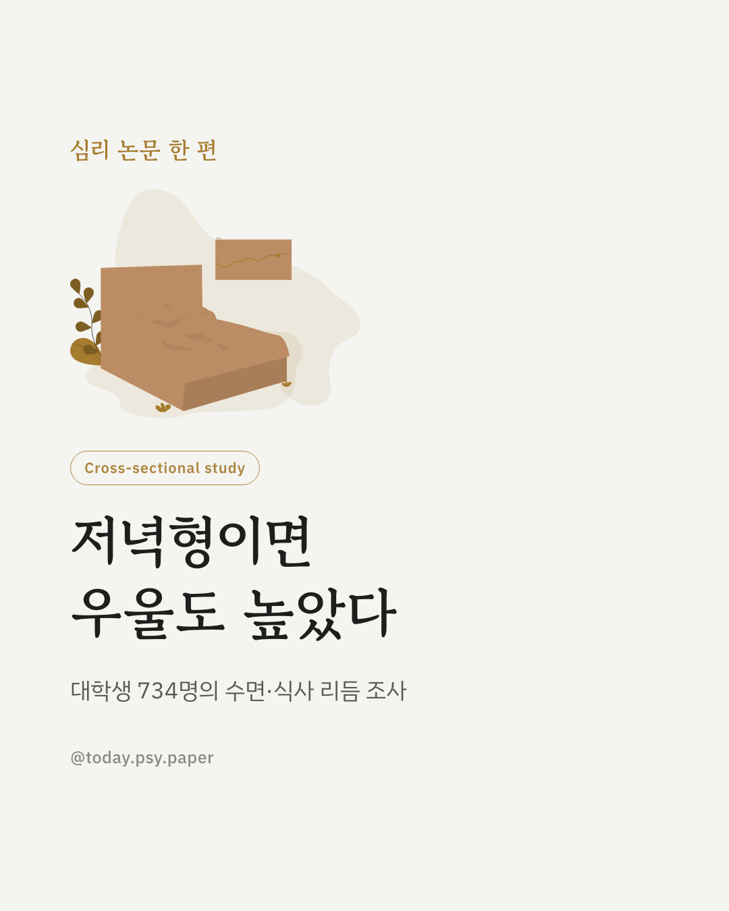
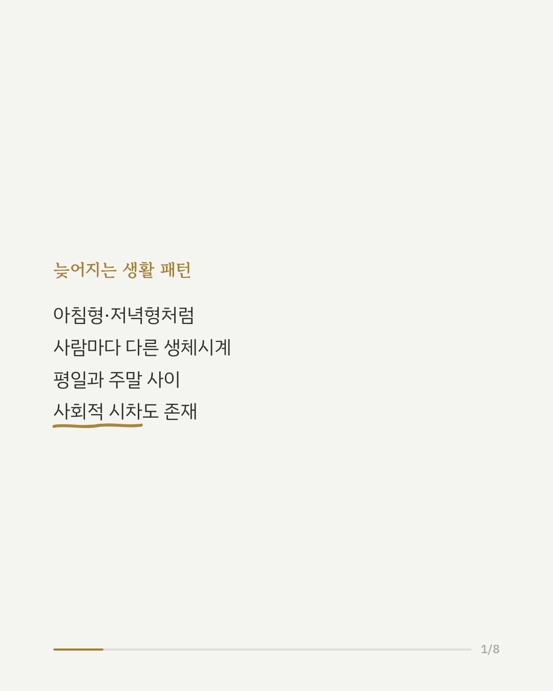
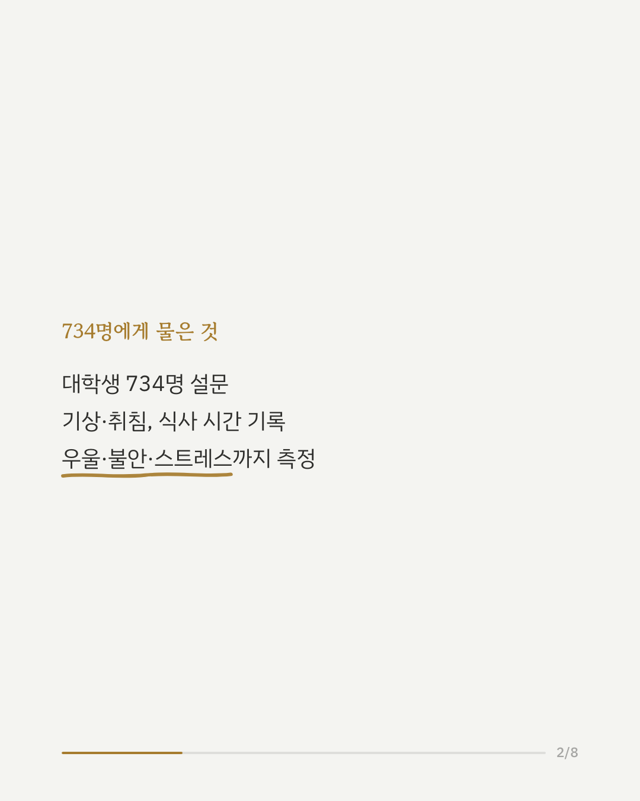
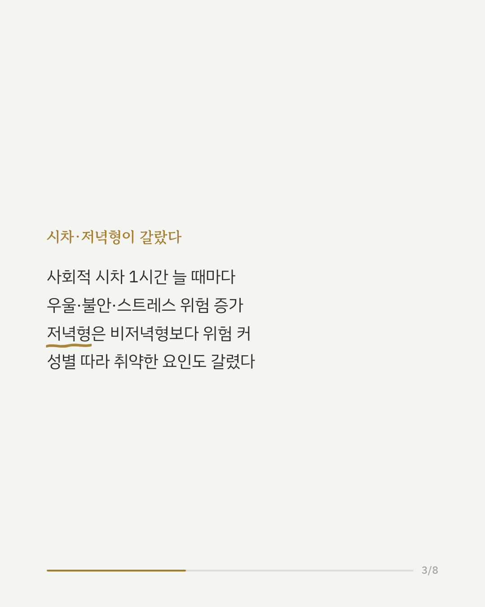
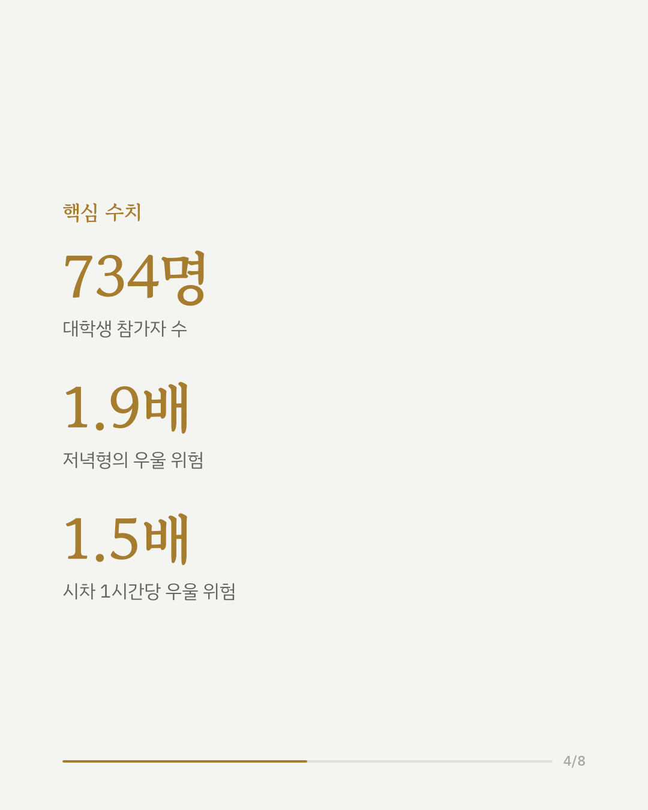
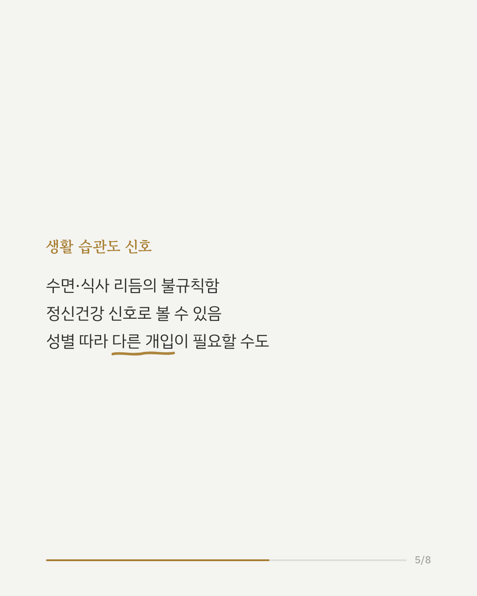
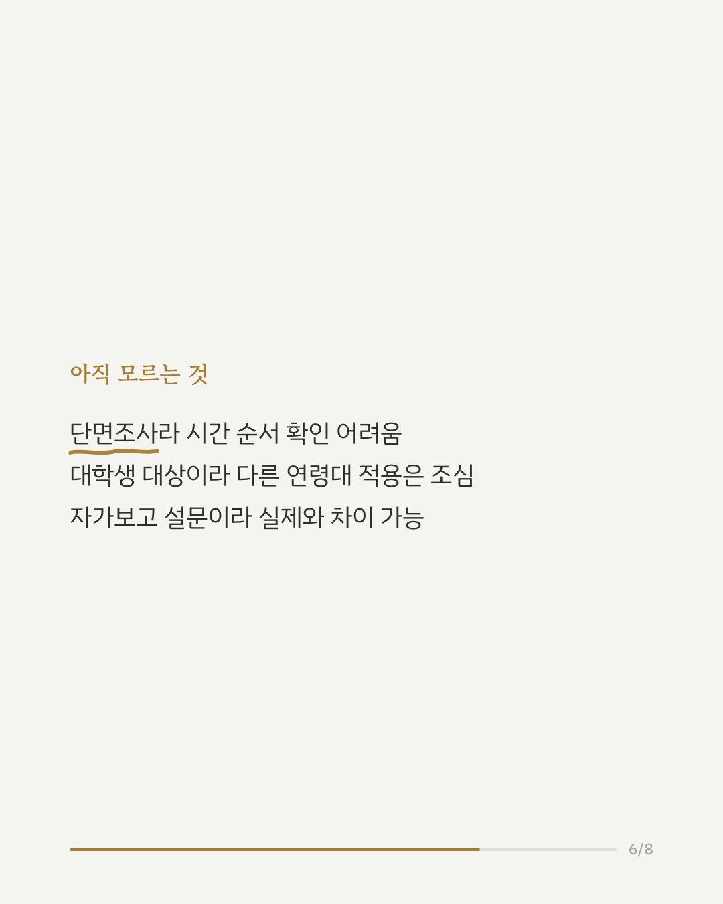
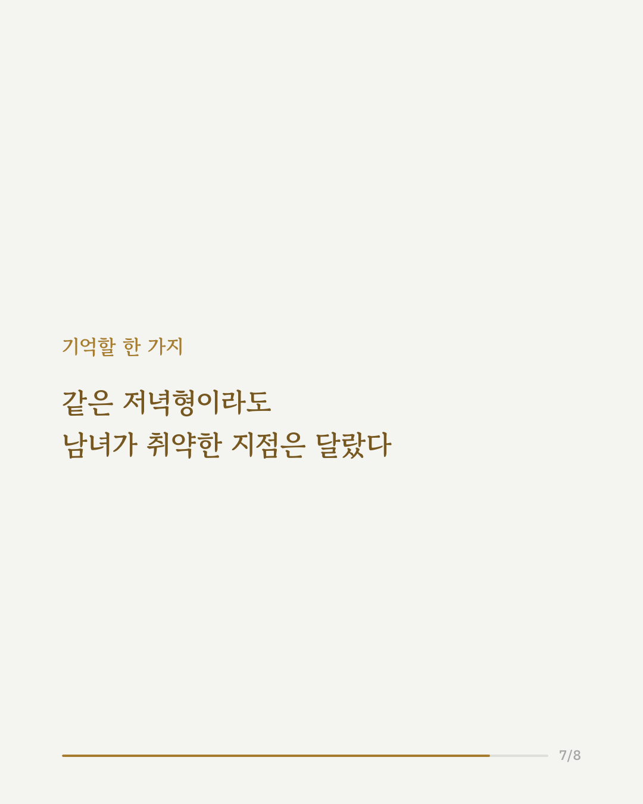
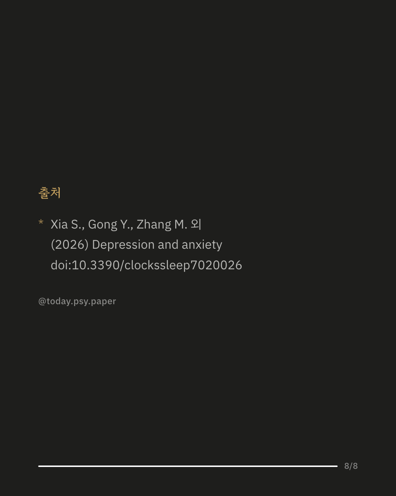

아침형이냐 저녁형이냐, 그리고 평일과 주말의 생활 리듬이 얼마나 다른지가 우울증과 불안, 스트레스와 관련 있다는 연구 결과가 나왔습니다. 대학생 734명을 대상으로 진행된 이번 연구는 기상·취침 시간, 식사 시간, 아침 결식 여부까지 폭넓게 조사했습니다. 분석 결과 평일과 주말의 수면 시간 차이, 이른바 사회적 시차가 1시간 늘어날 때마다 우울, 불안, 스트레스 위험이 함께 높아지는 것으로 나타났습니다. 저녁형 성향인 학생은 그렇지 않은 학생보다 우울 위험이 1.9배 가까이 높았습니다. 흥미로운 점은 이런 관련성이 성별에 따라 다르게 나타났다는 것인데, 사회적 시차와 우울의 관계는 남학생에서만, 저녁형과 우울·스트레스의 관계는 여학생에서만 뚜렷했습니다. 연구팀은 불규칙한 수면·식사 리듬이 청년층의 정신건강을 살피는 하나의 신호가 될 수 있다고 설명했습니다. 다만 이번 연구는 한 시점에서 설문으로 조사한 단면 연구라 리듬의 변화가 정신건강을 악화시켰는지, 반대로 정신건강이 나빠지며 리듬이 흐트러졌는지는 구분할 수 없습니다. 참가자도 대학생으로 한정돼 다른 연령대에 그대로 적용하기는 어렵습니다. 출처: Depression and Anxiety (2026), 'The Relationship Between Indicators of Behavior Rhythmicity With Depression, Anxiety, and Stress Among Youths' #임상심리 #정신건강정보 #심리학연구 #논문리뷰 #저녁형인간 #사회적시차 #대학생정신건강 #수면리듬
python3 publish.py 42643655